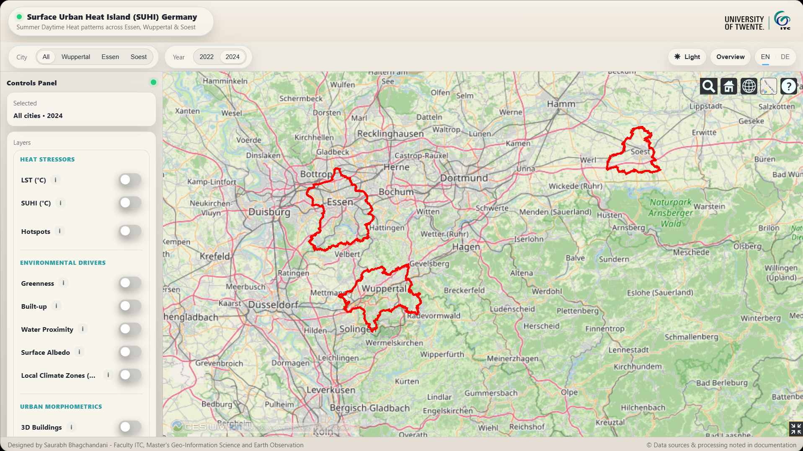

SUHI in German Cities
This project formed part of my MSc research and examined the drivers of daytime surface urban heat islands across Essen, Wuppertal, and Soest in Germany. It combines Earth Observation data with urban morphology and environmental indicators to understand how characteristics of the built and natural environment influence urban surface temperatures.
The analysis used ECOSTRESS land surface temperature data, spatial hotspot analysis, and machine-learning methods to investigate relationships between urban heat and factors such as vegetation, built-up areas, water, elevation, and urban form.
